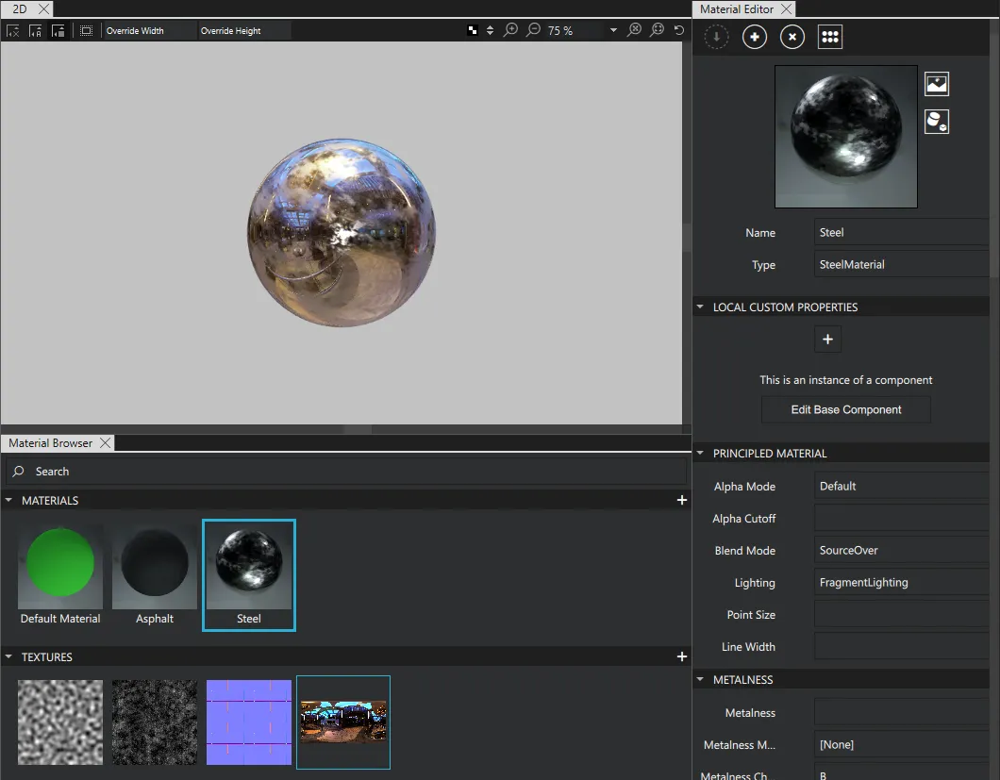
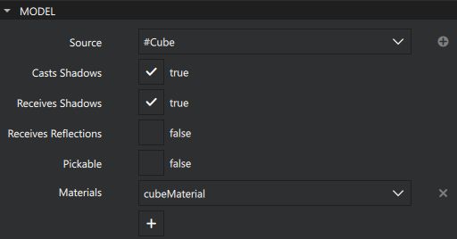
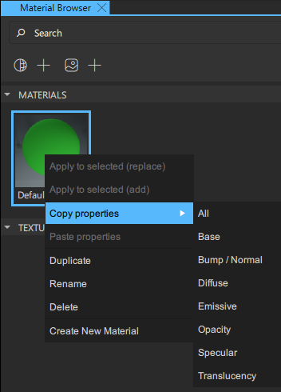
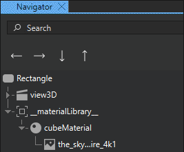

Material Editor and Browser
In the Material Editor and Material Browser views, you create and manage materials and textures.

Working with Materials
Creating a Material
To create a new material, do one of the following:
- In Material Browser, select
 .
. - In Material Editor, select .
Editing a Material
To edit a material, select it in Material Browser and edit its properties in Material Editor. If Material Editor is closed, open it in one of the following ways:
- In Navigator, right-click an object that has the material assigned to it and select Edit Material.
- In Material Browser, double-click a material.
Assigning a Material to an Object
To assign a material to a 3D object in your project, drag the material from Material Browser to the object in the Navigator or 3D view.
Additionally, you can also first select the object in the Navigator or 3D view, and then do one of the following:
- In Material Browser, right-click the material and select Apply to Selected. If there already is any material assigned to the object, you can select whether to replace the material or to add another material to the object.
- In Material Editor, select
 . This replaces any material already assigned to the object.
. This replaces any material already assigned to the object.
Removing a Material from an Object
To remove an assigned material from an object:
- In Navigator, select the object.
- In Properties, select
 next to the material.
next to the material.
Copying and Pasting Material Properties
You can copy properties from one material to another. You can choose if you want to copy all properties or certain property groups.
To copy material properties from one material to another:
- In Material Browser, right-click the material that you want to copy properties from.
- Select Copy properties and then All or a property group.

- Right-click the material that you want to copy the properties to.
- Select Paste properties.
Note: You can't copy material properties between materials of different material types.
Using Texture Maps
In Qt Design Studio you can add many different texture maps to your material.
To add a texture map to a material:
- Select the material in Material Browser.
- From Assets, drag an image to the correct map field in Material Editor. For example, to add a diffuse map, drag the image to Diffuse Map in Material Editor.
Using a Reflection Map for Environmental Mapping
To use a texture for environmental mapping, you need to set the mapping mode to environment.
To add a reflection map for environmental mapping to a material:
- Select the material in Material Browser.
- From Assets, drag an image to Reflection Map.
- In Navigator, select
 and then clear Show Only Visible Components. Now the texture you just added to the material is visible in Navigator.
and then clear Show Only Visible Components. Now the texture you just added to the material is visible in Navigator.
- In Navigator, select the texture.
- In Properties, set Texture Mapping to Environment.
Blending Colors
To determine how the colors of a model blend with the colors of the models behind it, set the Blend mode property. To make opaque objects occlude the objects behind them, select SourceOver.
For a lighter result, select Screen to blend colors using an inverted multiply or ColorDodge to blend them by inverted division. Color dodge produces an even lighter result than screen.
For a darker result, select Multiply to blend colors using a multiply or ColorBurn to blend them by inverted division, where the result also is inverted. Color burn produces an even darker result than multiply.
The screen and multiply modes are order-independent, so select them to avoid popping, which can happen when using semi-opaque objects and sorting the back and front faces or models.
For a result with higher contrast, select Overlay, which is a mix of the multiply and screen modes.
Lighting Materials
To set the lighting method for generating a material, use the Lighting property. Select Fragment lighting to calculate diffuse and specular lighting for each rendered pixel. Some effects, such as Fresnel or a bump map, require fragment lighting.
To skip lighting calculation, select No lighting. This is very fast and quite effective when using image maps that do not need to be shaded by lighting.
To set the base color for the material, use the Diffuse Color property. You can either use the color picker or specify a RBG value. Set the diffuse color to black to create purely-specular materials, such as metals or mirrors. To apply a texture to a material, set it as the value of the Diffuse map property. Using a texture with transparency also applies the alpha channel as an Opacity map. You can set the opacity of the material independently of the model as the value of the Opacity property.
Self-Illuminating Materials
To set the color and amount of self-illumination for a material, use the Emissive color and Emissive factor properties. In a scene with black ambient lighting, a material with an emissive factor of 0 is black where the light does not shine on it. Setting the emissive factor to 1 shows the material in its diffuse color instead.
To use a Texture for specifying the emissive factor for different parts of the material, set the Emissive map property. Using a grayscale image does not affect the color of the result, while using a color image produces glowing regions with the color affected by the emissive map.
Using Highlights and Reflections
You can control the highlights and reflections on a material by setting the properties in the Specular group. You can use the color picker or set a RGB value to specify the color used to adjust specular reflections. Use white for no effect.
To use a color texture to modulate the amount and the color of specularity across the surface of a material, set the Specular map property. Set the Specular amount property to specify the strength of specularity. This property does not affect the specular reflection map, but it does affect the amount of reflections from a scene's light probe.
Note: Unless your mesh is high-resolution, you may need to use fragment lighting to get good specular highlights from scene lights.
To determine how to calculate specular highlights for lights in the scene, set the Specular model. In addition to the default mode, you can use the GGX or Ward lighting model.
To use a Texture for specular highlighting on a material, set the Reflection map property. When the texture is applied using environmental mapping (not UV mapping), the map appears to be reflecting from the environment as you rotate the model. Specular reflection maps are an easy way to add a high-quality look at a relatively low cost.
To specify an image to use as the specular reflection map, set the Light probe property.
Crisp images cause your material to look very glossy. The more you blur your image, the softer your material appears.
To decrease head-on reflections (looking directly at the surface) while maintaining reflections seen at grazing angles, set the Fresnel power property. To select the angles to control, set the Index of refraction property.
To control the size of the specular highlights generated from lights and the clarity of reflections in general, set the Specular roughness property. Larger values increase the roughness, while softening specular highlights and blurring reflections. To control the specular roughness of the material using a Texture, set the Roughness map property.
Simulating Geometry Displacement
Specify the properties in the Bump/Normal group to simulate fine geometry displacement across the surface of the material. Set the Bump map property to use a grayscale texture for the simulation. Brighter pixels indicate raised regions.
To use an image for simulation, set the Normal map property. The RGB channels indicate XYZ normal deviations.
The amount of displacement is controlled by the Bump amount property.
Bump and normal maps do not affect the silhouette of a model. To affect the silhouette, set the Displacement map property. It specifies a grayscale image used to offset the vertices of geometry across the surface of the material. The Displacement amount property specifies the offset amount.
Specifying Material Translucency
Set the properties in the Translucency group to control how much light can pass through the material from behind. To use a grayscale texture, specify it as the value of the Translucency map property.
To specify the amount of light wrap for the translucency map, set the Diffuse light wrap property. A value of 0 does not wrap the light at all, while a value of 1 wraps the light all around the object.
To specify the amount of falloff for the translucency based on the angle of the normals of the object to the light source, set the Translucency falloff property.
Culling Faces
Set the Culling mode property to determine whether the front and back faces of a model are rendered. Culling modes check whether the points in the polygon appear in clockwise or counter-clockwise order when projected onto the screen. If front-facing polygons have a clockwise winding, but the polygon projected on the screen has a counter-clockwise winding, the projected polygon is rotated to face away from the camera and is not rendered. Culling makes rendering objects quicker and more efficient by reducing the number of polygons to draw.
Working with Textures
Creating a Texture
To create a new texture, do one of the following in Material Browser:
- Select in the Textures section.
- Right-click anywhere in the Textures section and select Create new texture.
Note: You can also create textures from the Assets or Texture Editor views.
Applying a Texture to a Material
To apply a texture to a material, select the material in Material Browser and do one of the following:
- Right-click the texture and select Apply to selected material.
- Drag the texture to a supported property in the Material Editor